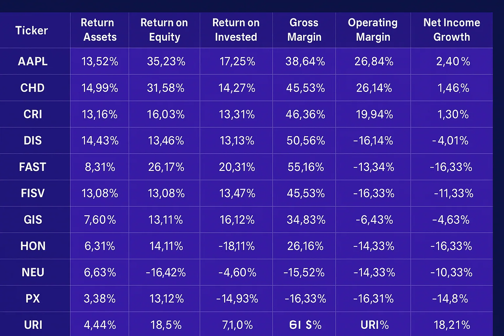
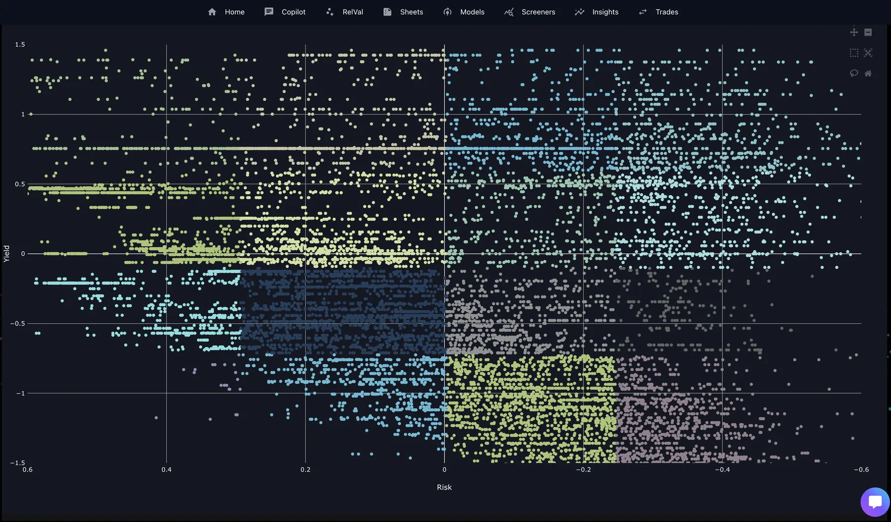
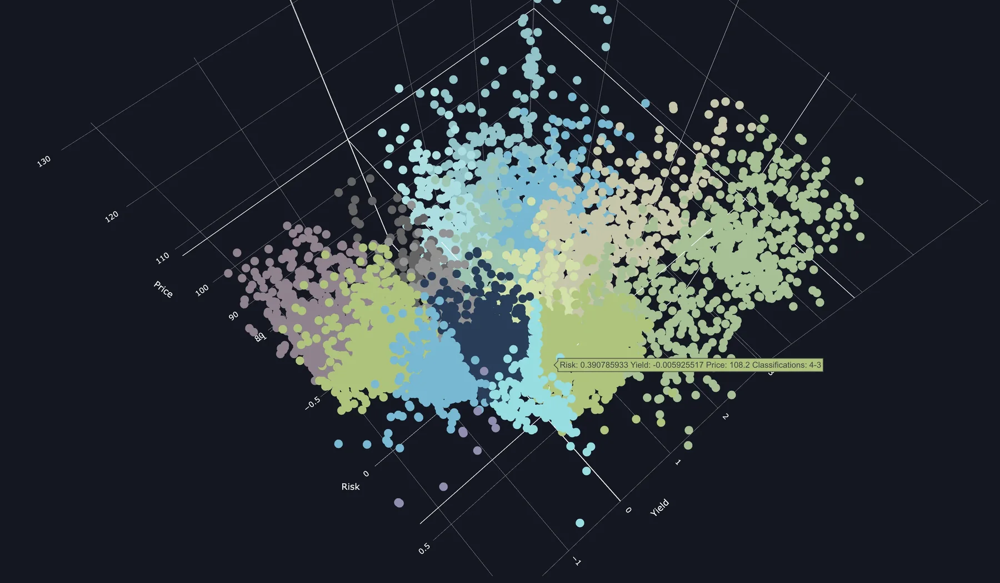

Generative Models brings a New Approach to Relative Value Analysis of Securities
In today's investment landscape, traditional methods of analyzing company fundamentals may overlook key drivers of value. By incorporating generative AI models into relative value analysis, investors can broaden their perspective beyond conventional metrics to include factors such as network effects, intellectual property, brand recognition, and the quality of talent within a company. This expanded approach enables investors to uncover alpha—the excess return generated over a benchmark—by identifying undervalued assets with significant growth potential.
Take OpenAI, for instance. While its financials may not align with traditional measures of company performance, its position as a leader in artificial intelligence research and innovation represents a formidable asset. By recognizing the value of its intellectual property, talent pool, and market influence, investors can appreciate OpenAI's potential for long-term growth and success.
In essence, leveraging generative AI models in relative value analysis empowers investors to discover hidden opportunities and make informed investment decisions based on a comprehensive understanding of a company's true value drivers.
What is a Generative Model?
Generative models belong to a class of models designed to grasp the underlying distribution of data and produce new samples from it. These models can be categorized into two main types: explicit and implicit. Explicit models directly define and optimize the likelihood function of the data, examples of which include probabilistic graphical models, Bayesian networks, and variational autoencoders (VAEs). On the other hand, implicit models do not explicitly define the likelihood function. Instead, they learn a mapping from a latent space to the data space. Examples of implicit models include generative adversarial networks (GANs), autoregressive models, and normalizing flows.
What is Generative Clustering?
Generative clustering merges generative models and clustering algorithms to enhance both performance and interpretability. This technique falls under the umbrella of unsupervised learning, focusing on revealing the latent structure within the data and assigning labels to clusters accordingly. Moreover, it can also be viewed as a form of semi-supervised learning, leveraging cluster labels as partial supervision to refine data generation and representation. Generative clustering finds applications across diverse data types, including images, texts, graphs, and time series.
What is Relative Value?
When discussing "Relative Value Analysis" for equities, people often associate it with metrics like Price/Earnings ratios and similar comparison measures. Traditional market-based valuation models typically involve identifying companies within a sector and determining Price or Enterprise Value multiples for them. However, in today's diverse markets, is this approach truly practical? Consider Amazon: is it primarily a software company or a retailer? How does one effectively compare Apple and Microsoft? And what about high-growth companies like Tesla and Netflix—are they considered tech companies as well?
In some instances, companies break down their performance by business segments to facilitate a sum-of-the-parts analysis. Yet, even with this approach, finding pure-play comparables can be exceedingly challenging. Is there a more effective way to assess relative value? We believe so.
The Clustering Algorithm
Consider for a moment a scenario in which market investors are presented solely with the business fundamentals of companies and tasked with valuing them. Each investor receives detailed information on metrics such as Gross Margins, Operating Margins, Revenue Growth, and Return on Invested Capital (ROIC), without knowledge of the company names or the sectors/industries they operate in. How would investors assess the value of these companies? In a truly efficient market, shouldn't investment decisions be based on the actual business fundamentals and performance of companies?
The concept behind clustering is to identify true comparables for the companies under evaluation. Traditionally, when conducting Relative Value Analysis, individuals seek comparables within the same industry or those targeting a similar customer base. However, this approach often overlooks the actual fundamentals of the business and the market's valuation of these qualities (e.g., top-line growth or leverage in the business model, network effects, intellectual property, brand recognition, and the quality of talent within a company). The aim is to address this gap through the clustering algorithm.
The process begins by examining the fundamental aspects of each company's business, regardless of industry. Let's suppose N fundamental features and qualitative factors are selected (such as Gross Margin, Operating Margin, Return on Invested Capital, Revenue Growth, Network Effects, Intellectual Property, Brand Recognition, and the Quality of Talent within a Company etc.), representing a point in an N-dimensional feature space for every company. The next challenge lies in finding comparables closest to the target company based on their fundamental financial metrics. This is where Machine Learning proves invaluable. While humans struggle to compare more than 2-3 features effectively, models excel in this regard.
Through the algorithm, the N-dimensional feature space is analyzed to identify a cohort of companies with business fundamentals most similar to the target company. Consider, for example, the cohort of companies displayed below for Apple at a specific point in time. Note how all these companies exhibit robust ROA, ROE, ROIC, and Gross/Operating margins, yet they demonstrate minimal revenue growth and typically a slight decline in Net Income. This cohort represents companies closest to Apple in terms of their business fundamentals but vastly differ on factors such as network effects, intellectual property, brand recognition, and the quality of talent within a company.

While examining the cohort, one may encounter certain features of a company that appear dissimilar to those of the target company. However, inclusion in the cohort indicates that this particular company exhibits other features much closer to the target. The critical point to understand is that the clustering algorithm aims to identify companies most resembling the target across all dimensions within the N-dimensional feature space. Any disparities observed in clustering within a lower-dimensional space arise from disregarding input from additional features.
Although the specifics of the complete feature set and the definition of the feature space remain proprietary, it's important to note that all the features displayed in the table above are included, and they share some common characteristics:
- The selected features represent fundamental aspects that reflect the health and performance of the target company's business.
- Valuation metrics are excluded from the chosen features. At this stage, the focus is solely on the quality of the underlying business, irrespective of valuations or industry.
- The features assigned to a company remain relatively stable until the company reports quarterly/annual results. These features are selected to minimize volatility over subsequent reporting periods and thereby reduce churn within the cohorts.
The Relative Value Model
At the conclusion of the clustering process, cohorts of companies are formed based on the fundamental characteristics of their businesses, laying the groundwork for the Relative Value model. Each cohort exhibits unique characteristics; for instance, a stable and profitable business will be grouped with similar stable/profitable companies, while a company experiencing operational losses but substantial revenue growth will belong to a cohort with similar characteristics.
Based on the distinct attributes of each cohort, an appropriate Relative Value Model is selected. To provide users with insight into the characteristics of a cohort, standard "Fair Value" Valuation metrics for the cluster, such as P/E, P/S, P/FCF, and EV/EBITDA, are generated. Using these fair value metrics, a target "Cohort Fair Value" for each security, along with a range of values representing conservative to aggressive valuation approaches, is calculated. This value signifies a "Fair Value" if investors consider the qualitative and quantitative fundamentals of the business.
However, it is acknowledged that investors may have inherent biases that may not erode over a reasonable timeframe. To address this, the discount/premium that companies within a given sector are trading relative to the cohort fair value is examined and incorporated into the model. This adjustment aims to capture premiums paid for certain sectors, such as tech companies, or discounts applied to cyclical companies at the peak of a cycle.
The purpose of this adjustment is to identify mispricing in the market between business fundamentals and market valuations of companies, with the goal of generating alpha. If the current market price of a security deviates significantly from the "Fair Value," it is labeled as "Relatively Undervalued" or "Relatively Overvalued" accordingly.

Interpreting the Model Output
How does one incorporate the model into their analysis? The primary consideration is that it is a Relative Value Model. It does not assess the valuations of the target security in isolation based on first principles, nor does it consider macro-economic factors that may impact future valuations. A "Relatively Undervalued" rating from the model indicates that a security is currently trading at a discount to its peers with similar business fundamentals. The premium or discount observed between a stock's fair value and its market price reflects the premium or discount market participants attribute to the management team at the target company and any unique opportunities within the industry to which the company belongs.
The fluctuation of this premium or discount over time can be tracked on the price charts, allowing for an assessment of agreement or disagreement with the current valuation. This is particularly crucial when evaluating unprofitable companies or those with declining fundamentals. While the model may assign a Relatively Undervalued rating to some of these companies based on how similar companies are trading, it does not automatically imply that they are sound investments.
It is recommended to review the output of the model for several securities closely monitored to gain insight into the information it provides. It's important to remember that this is ultimately a model—one that aims to standardize the concept of Relative Fair Value across a broad universe of securities by examining line items in companies' financial reports. It should not replace due diligence and company/industry-specific analysis. This is where another tool, called the Tearsheet, can take it to the next level, which we will be discussing in the next blog.
How newer generative models can transform relative value analysis, and what options are available.
Generative AI-driven clustering methods can integrate seamlessly into a generative graph representation learning framework, often approximated by a Gaussian Mixture Model (GMM). Within this setup, clustering can be devised employing ensemble or consensus techniques. Such clustering strategies imbue the process with reliability, robustness, interpretability, and scalability by facilitating parallel computation for generating multiple cluster partitions and subsequently consolidating them into a final partition through a consensus mechanism. Moreover, the ensemble technique allows validation against the diversity of base clusterings, enhancing its efficacy.
Picture a large container filled with a jumble of assorted toys. Generative clustering functions akin to a sophisticated toy organizer. Rather than simply segregating toys by color or size, it discerns from their attributes, like shapes and patterns, to categorize them into groups. It's akin to instructing the sorter about toy classifications without providing explicit guidelines. This approach proves immensely beneficial as it uncovers concealed patterns across diverse domains, be it securities, arbitrage, or even graphs. Thus, through generative clustering, we gain insight into vast, chaotic securities datasets by uncovering these latent clusters.

VAE-driven clustering
VAE-driven clustering presents a generative clustering strategy employing Variational Autoencoders (VAEs) as the foundation. VAEs, comprising an encoder and a decoder, transform input data into a latent space where each datum is characterized by a mean and a variance. The decoder, in turn, reconstructs the input data from samples extracted from this latent space. VAEs excel in learning a compact, smooth representation of data, facilitating clustering processes. Implementing VAE-based clustering involves integrating a discrete latent variable into the VAE architecture, serving as the cluster assignment mechanism. Various distributions, such as categorical, Gaussian mixture, or Dirichlet, can model this discrete latent variable. Compared to conventional methods like k-means or Gaussian mixture models, VAE-based clustering demonstrates superior accuracy and resilience.
GAN-driven clustering
GAN-driven clustering represents another approach within the realm of generative clustering, employing Generative Adversarial Networks (GANs) as the underlying generative model. GANs comprise a generator and a discriminator, with the generator tasked with producing realistic data from a random noise vector, while the discriminator endeavors to differentiate between real and synthetic data. GANs excel in learning high-quality, diverse representations of data, capable of capturing its intricate, multimodal characteristics. Implementation of GAN-based clustering involves incorporating a discrete latent variable into the GAN architecture, serving as the basis for cluster assignment. This discrete latent variable can be modeled using various distributions, such as categorical, Gaussian mixture, or Dirichlet. Compared to traditional methods like k-means or Gaussian mixture models, GAN-based clustering demonstrates superior clustering efficacy and diversity.
Other Generative Models
In addition to VAEs and GANs, several other generative models prove beneficial for clustering within AI. These encompass autoregressive models, normalizing flows, and probabilistic graphical models. Autoregressive models, for instance, are neural networks that sequentially generate data while conditioning on preceding data points. Normalizing flows, on the other hand, are neural networks adept at transforming a simple distribution into a complex one through a series of invertible and differentiable functions. Meanwhile, probabilistic graphical models represent the joint probability distribution of data and latent variables through a graph structure. These diverse generative models can also integrate discrete latent variables for clustering purposes, leveraging various inference and optimization techniques like expectation-maximization, variational inference, or reinforcement learning.
Our Conclusion
In today's investment landscape, traditional methods of analyzing company fundamentals may overlook key drivers of value. By incorporating generative AI models into relative value analysis, investors can broaden their perspective beyond conventional metrics to include factors such as network effects, intellectual property, brand recognition, and the quality of talent within a company. This expanded approach enables investors to uncover alpha—the excess return generated over a benchmark—by identifying undervalued assets with significant growth potential. For example, OpenAI's value is not fully captured by traditional financial metrics, but its leadership in AI research and innovation highlights its potential for long-term growth. Leveraging generative AI models in relative value analysis empowers investors to discover hidden opportunities and make informed decisions based on a comprehensive understanding of a company's true value drivers.
LLM-enabled clustering and relative value analysis provide a high-level market map and help identify arbitrage opportunities. However, these insights require guardrails and tools to set boundaries for real trades, as any mistake can result in financial losses. We will delve deeper into this in our next blog post, "AI Guardrails, Precise Boundaries, and Tearsheets: Transforming Value Creation in Financial Markets."
Gen-AI: Business Model - "Unlocking Gen-AI's True Potential: The Next Phase of Monumental Value Creation"
Finance series: Part 1 - "The Impact of Generative Ai Models: Revolutionizing Relative Value Analysis in Securities Markets"
Finance series: Part 2 - "AI Guardrails, Precise Boundary and Tearsheets can Transform Value Creation in Financial Markets"
Finance series: Part 3 - "AI Agents in Finance: How Relative Value Analysis and Tearsheets Pave the Way for AI Copilots and Autonomous Intelligent Agents"